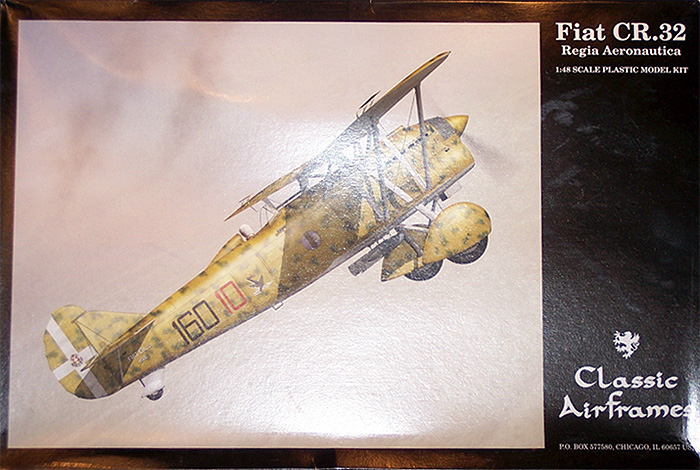
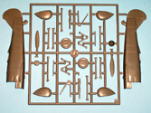
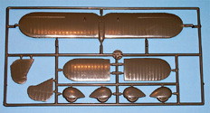
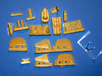
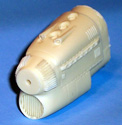
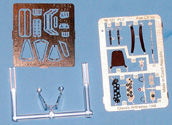
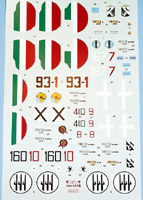

{kind=link}
{kind=link}
{kind=link}
{kind=link}
{kind=link}
{kind=link}


Classic Airframe Fiat CR.32

Kit #4108
MSRP $39.95
Images and text Copyright © 2007 by Mark Therrell
Brief History
The Fiat CR.32 is one of the last of the biplane fighters and was the best of Italian aeronautical engineer Celestino Rosatelli’s designs. It’s most notable feature is the lower wing being shorter than the upper wing, making it very maneuverable. The CR.32’s airframe was made of metal and covered with aluminum and fabric. It was powered by a Fiat A.30 engine driven by a dual blade propeller that produced 600h.p. Armament included two Breda 12.7mm machine guns on top of the engine cover and a bomb load of up to 100kg. The first aircraft left the production lines and went into service with the Regia Aeronautica in 1932 and continued service well into WWII being used primarily on night missions or for training new pilots due to its antiquated design by that time.
The Kit
The kit consists of 41 grey plastic pieces, 1 clear, 39 photo-etch, and 25 finely molded resin pieces with the nose/cowl section being most impressive. All parts were enclosed in a single plastic bag with the resin and photo-etch bagged separately inside this bag. Although the clear canopy seems to have survived the packaging the same cannot be said for the reviewer’s upper wing. Some minor scratches are evident and will need a little light sanding or possibly some Mr. Surfacer 1000.
Classic Airframes has seen fit to supply two options on the wheels. One set is molded along with the spats and there is a set of separate spats and wheels. Both of the separate wheels suffer from minor mold defects and will take a little putty or Mr. Surfacer 500 to repair. Like the wing surface, this doesn’t present much of a problem to repair.
The resin parts of the kit are truly impressive. The entire cockpit is resin with the exception of the instrument panel, rudder pedals, and seat belts that are photo-etch. Two bombs are supplied and care will be needed to separate them from the pouring blocks to keep from damaging the fins. Tail planes and a rudder are also supplied to replace the molded ones on the fuselage. The really great part of the kit is the nose section. This piece is really well detailed with fine fins, well defined panel lines and gun tubes that will not need to be drilled out. My example has a slight pinhole in one of the gun tubes but it will be simple to correct. Upon inspection of the resin under 10 x magnifications that single pinhole is the single flaw of all the resin.





You may click on the small images above to view larger pictures

The decals are printed by Microscale and seem to be very well done. The instructions are broken down into 10 steps and there are a total of 8 profiles given for markings. The color callouts are my one and only beef with the entire kit. The colors are given in generic names so some knowledge of Italian colors will be helpful here.
Conclusion
For a limited run kit I find this one to be top notch. Very few flaws are on the kit and none of them will be a problem for even a novice builder, however this kit is not meant for a novice builder because of the photo-etch and small resin pieces. There is minimal rigging on this plane so if you’re looking for a good first bi-plane and have resin and photo-etch experience this kit is definitely deserving of your shelf space.